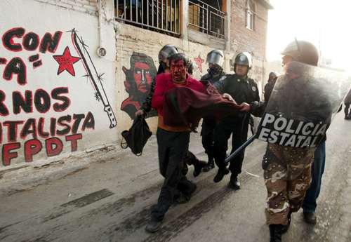

ATENCO, ¡TERRORISMO DE ESTADO!
El 3 de mayo de 2006, muy temprano en la mañana, ocho floricultores simpatizantes con el EZLN fueron desalojados a la fuerza por la policía de Texcoco, municipio contiguo a Atenco, impidiéndoles vender su mercancía. Por tal motivo, los comerciantes de flores acudieron al FPDT para solicitar su ayuda en contra de la arbitrariedad policiaca. A las pocas horas, los floristas, el FPDT y muchos habitantes de Atenco tomaron una carretera federal, iniciando una confrontación entre ellos y la policía. Ese día, durante los desiguales combates, murió por herida de bala un joven de 14 años; mientras los pobladores se defendían con puños y piedras, la policía usaba las armas y disparaba contra la población indefensa.
Al amanecer, los helicópteros sobrevolaban el cielo de Atenco, y en las calles, los efectivos policiacos entraban al pueblo desatando una represión inusitada y pocas veces vista en la vida moderna del país. La policía irrumpió en las casas destruyendo todo a su paso, allanó y cateó domicilios ilegalmente, destruyó negocios, con macanas golpeó a la gente sin distinción de género o edad, lanzó gases lacrimógenos, utilizó la tortura y detuvo a 207 personas, entre ellos nueve menores de edad, un parapléjico y una indígena mazahua. Durante la batalla, que duró varias horas, un joven universitario de 20 años, quien había ido a solidarizarse con los atequenses, recibió el impacto de un proyectil en la cabeza; después de un mes en coma, el estudiante murió.
Esperando una ofensiva mucho más agresiva por parte del gobierno, la noche del 3 de mayo, adherentes de La Otra Campaña, seguidores del EZLN y simpatizantes del FPDT fueron llegando a Atenco para solidarizarse con los pobladores; la consigna zapatista era “si tocan a uno, nos tocan a todos”. Entre los que fueron esa noche a Atenco, se encontraban algunos documentalistas, como Valentina Palma, estudiante de cinematografía chilena radicada en México, y Samantha Dietmar, una ciudadana alemana que quería “hacer un documental de México y su gente”.
La madrugada del 4 de mayo las campanas de la iglesia de Atenco comenzaron a repicar anunciando la inminente entrada de la policía. Al frente de los más de 3 mil efectivos policiacos venían los reporteros de las televisoras privadas que el día anterior habían vociferado contra “la violencia de los macheteros de Atenco” y que habían exigido “mano dura” contra los “delincuentes” que “alteraban el orden social”. Mientras tanto, en el poblado, la gente formaba barricadas y tomaba palos y piedras para defenderse.
